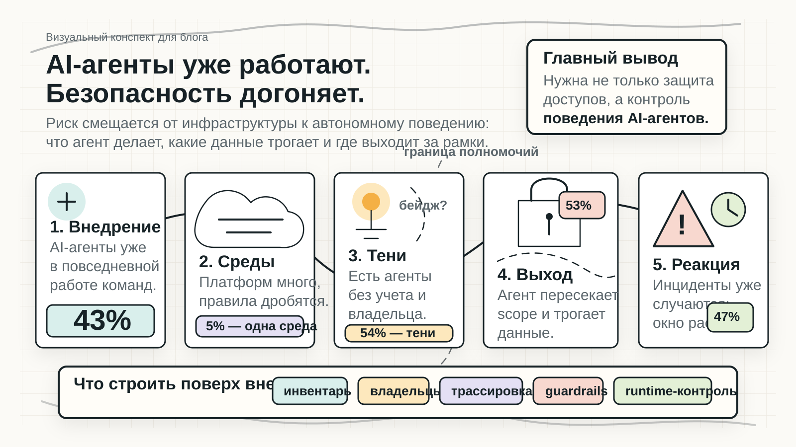

AI-агенты уже стали частью работы. Теперь безопасность должна научиться видеть их поведение.
Конспект переводит отчет CSA и Zenity в одну схему: агентская автоматизация масштабируется быстрее, чем инвентаризация, владельцы, трассировка, runtime-контроль и готовность реагировать.
Слева направо
От массового использования к разрыву контроля и последствиям.
Центральная граница
Риск появляется там, где агент выходит за ожидаемый scope.
Нижний слой
Что надо достроить: учет, владельцев, трассировку, guardrails и runtime-контроль.
Тон
Без паники: проблема не в "злых агентах", а в отставании управления.